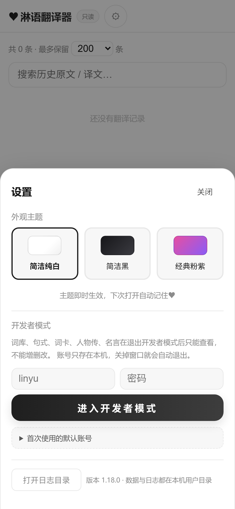

手机浏览器打开时
它应该长这样
桌面端已经完成了网页化，但把 7 个横排 tab、双栏翻译框、7 列表格照搬到 390px 宽的手机上， 结果是横向滚动、字号过小、点击目标挤在一起。这份设计沿用同一套设计 token （颜色 / 圆角 / 阴影 / 渐变一个字没改），只重排密度与位置， 让手机端读起来像原生 App，同时保证桌面端一个像素都不变。
- 7页面全部适配
- 3主题自动继承
- 0桌面端样式改动
- 17/17自动化断言通过
01设计基线：一套 token，三块屏幕
移动端不引入任何新颜色。下面这些变量全部来自 src/renderer/style.css，
Electron 桌面端、Capacitor 安卓端、Web 端共用同一份定义 —— 所以在手机上切主题，效果和 exe 里完全一致。
经典粉紫（标志性皮肤）
#e64fa2 → #8b5cf6，粉紫渐变按钮与选中胶囊，浅粉页面底
简洁纯白
#1f1f1f 单色系，阴影降到 5% 透明度，适合白天强光
简洁黑
#0f0f11 底 / #1b1b1f 卡片，夜间不刺眼
| 变量 | 粉紫主题取值 | 移动端怎么用 |
|---|---|---|
--grad | linear-gradient(90deg, #e64fa2, #8b5cf6) | 「翻译 ♥」主按钮、底部导航选中态、标题渐变字 |
--card / --line | #ffffff / #f0e3f0 | 卡片化后的词条行、底部导航胶囊、顶栏底色 |
--shadow | 0 8px 24px rgba(155,100,180,.08) | 每张词条卡片独立投影，代替桌面端的整块表格边框 |
--muted / --placeholder | #9b8aa9 / #c8b9d4 | 卡片左侧的列名标签（中文 / 别名 / 语义位） |
--btn-shadow | 0 6px 16px rgba(230,79,162,.3) | 底部导航胶囊的一层柔光，和主按钮同一个视觉层级 |
| 圆角 | 面板 16px · 按钮 12–15px · 胶囊 999px | 手机卡片统一 16px，触控元素一律不低于 40px 高 |
02版式映射：改了什么，为什么改
只动排布，不动视觉语言。每一条改动都对应一个手机上的真实约束。
| 区域 | 桌面端 | 手机端 | 依据 |
|---|---|---|---|
| 主导航 | 顶栏内横排 7 个胶囊 tab | 底部悬浮胶囊导航 ↓ | 7 个 tab 横排需要 420px，390px 屏幕必溢出；底部是单手拇指可达区，且不占用内容高度 |
| 翻译页 | 左右双栏，输入 / 结果并排 | 上下堆叠，输入在上结果在下 | 手机宽度放不下两栏各 170px 的可读行宽；堆叠后键盘弹起时输入框仍在视野内 |
| 词库 / 句式 | 7 列表格 + 粘性表头 | 每条一行卡片，左列名右内容 | 7 列在 390px 下每列只剩 55px，必然横向滚动。改用模板里已有的 data-col 当标签，零改 HTML |
| 词卡 | auto-fill 最小 230px | 固定两列，卡片高度 170 → 150px | 手机上 auto-fill 会退化成单列，一屏只看得到 2 张卡；两列能在同屏放下 4 张，翻卡频次更高 |
| 名言墙 | auto-fill 最小 320px | 单列 | 名言正文较长，320px 断点在 390px 屏上刚好卡成一条极窄的独行，单列更好读 |
| 设置 | 居中弹窗 420px | 底部抽屉，顶部圆角 22px | 居中弹窗在手机上要么被键盘顶走，要么边距只剩 30px；抽屉是移动端设置的标准形态 |
| 输入框 | 13px | 统一抬到 16px | iOS Safari 对小于 16px 的输入框会在聚焦时自动放大整页，而且不会缩回来 |
| 顶栏毛玻璃 | backdrop-filter: blur(8px) | 改不透明底色 | 见下方 04 的第 1 条：它会破坏底部导航的 fixed 定位 |
03界面
下面全部是在 390 × 844（iPhone 14 逻辑分辨率）下真实运行的截图，不是效果图 —— 所见即上线后的样子。

主界面
输入 → 结果上下两段，主按钮独占一行 50px 高。底部胶囊导航选中态用同一支粉紫渐变，和按钮呼应。

空态与示例词
示例句自动换行成两排，胶囊尺寸放大到手指能点准。桌面端那行 Ctrl+Enter 快捷键提示在手机上直接隐藏。

表格 → 卡片
中文 17px 加粗打头，淋语粉字跟在 ➜ 后面，其余列变成「列名 + 内容」两栏。空字段整行不渲染，卡片不会挂着空标签。

两列翻卡
筛选胶囊改成横向滑动，一屏能看见 4 张卡。320px 以下（iPhone SE 一代）自动退回单列。

图文卡
头像从 88px 收到 58px，简介截断三行并加「查看详情」，列表不再被长简介撑成一条条长条。

底部抽屉
顶上圆角 22px，贴底铺满宽度，最高占 88% 屏高后内部滚动。遮罩会同时压暗顶栏和底部导航，视觉上只剩这一层。
04四个必须知道的实现细节
这几条都是实测踩出来的，不写下来下次改样式一定会再踩一遍。
backdrop-filter 会破坏 fixed 定位
桌面端顶栏有 backdrop-filter: blur(8px)，而底部导航正是它的子元素。
毛玻璃会给元素自身创建 containing block，于是 position: fixed; bottom: 10px
变成「相对顶栏底部 10px」—— 导航直接粘在屏幕上方。
解法：移动端顶栏去掉毛玻璃、改不透明底色，毛玻璃留给底部导航自己用。
iOS 输入框必须 16px
桌面端搜索框是 13px，手机上一聚焦，Safari 会把整页放大到 16px 等效宽度，而且失焦后不会缩回去。
所有 input / select / textarea 在移动端统一抬到 16px，改字号比加 maximum-scale 更正确 ——
后者会顺手禁掉用户的双指缩放。
平板和触屏本子会被 UA 骗
iPadOS 13+ 的 UA 伪装成 Macintosh，纯看 UA 会判成桌面；反过来，触屏笔记本窗口拖窄又会被判成手机。
判定顺序是：明确桌面 UA 先否决 → 再看手机 UA → 最后用「粗指针 + 最小边 ≤ 820px」兜底。
另外支持 ?ui=mobile / ?ui=desktop 手动覆盖，存在 localStorage 里。
刘海屏与小白条
顶栏 padding-top: calc(6px + env(safe-area-inset-top))，
底部导航 bottom: calc(10px + env(safe-area-inset-bottom))，
内容区底部再额外留 88px —— 否则 iPhone 的横条会压住最后一条词条。
页面高度用 100dvh 而不是 100vh，避免地址栏收起时底部被裁掉。
05桌面端：一个像素都没动
所有移动端规则都挂在 body.mobile-app 前缀下。
桌面浏览器不会挂这个类，web/mobile.css 里 400 多条规则一条都不命中。下面是同一份代码在桌面 UA 下的渲染结果：

自动化断言里专门做了这组对照：桌面 UA 下 body.mobile-app 必须不存在、导航必须不是 fixed、翻译页必须仍是双栏、表格行必须仍是 table-row。
06怎么自己看
不用换设备，在电脑上就能验证两种形态。
直接打开线上链接
UA 判定命中，自动加载新排版
…?ui=mobile
参数会记进 localStorage，之后刷新仍是手机版
…?ui=desktop
反过来强制走桌面布局，方便对比
linyuMobile.on() / off()
不用刷新，调样式时最省事
npm run web:probe-mobile
无头 Edge 模拟 iPhone 跑 17 项断言并输出截图